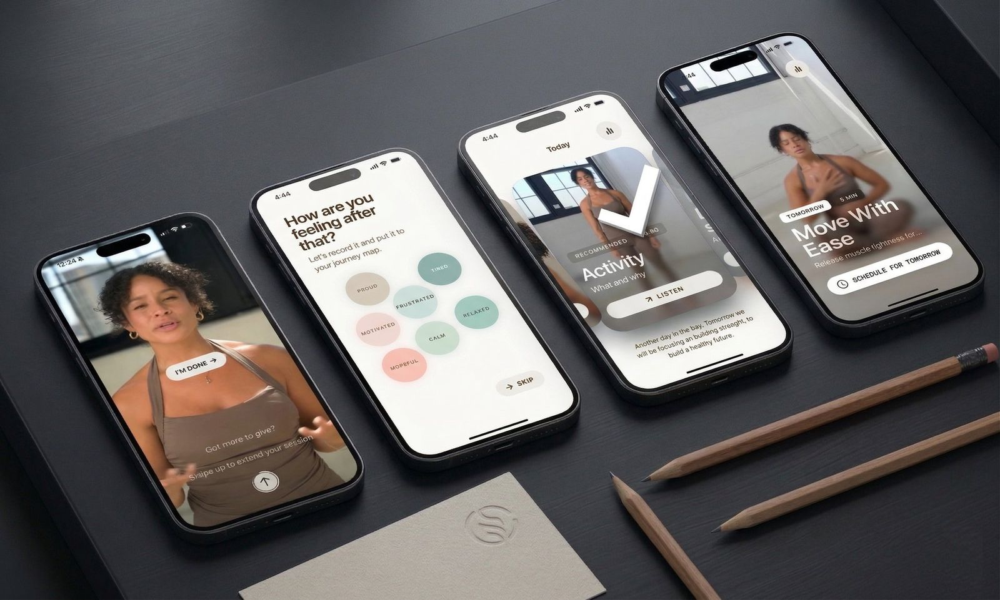

Building a design organisation at scale
Joined Welltech to build the design, user research and writing functions from the ground up. Worked directly with the CEO and CPO to define the role of design in the company's product strategy, then hired and scaled a 40+ person multidisciplinary team of designers, researchers, writers and managers. Led the strategic redesign of core products and made the case to the executive team to invest in AI-led personalisation, resulting in the launch of Return.